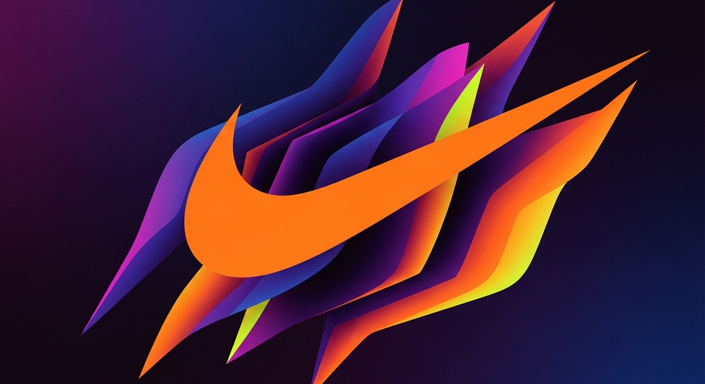

Coragem pra ir alem
A Nike é uma marca que nasceu da paixão pelo esporte e da crença de que todos têm o potencial para se superar. Nossa missão é oferecer inovação, desempenho e conforto, desenvolvendo produtos que ajudam atletas — de qualquer nível — a conquistarem seus objetivos. Cada peça, cada tênis e cada detalhe são pensados para entregar o máximo em qualidade, tecnologia e design, acompanhando quem acredita no poder da disciplina, do foco e da superação. Não importa se você está nas ruas, nas pistas, nas quadras ou na academia — a Nike está ao seu lado em cada passo, inspirando você a nunca desistir.
Acreditamos que o esporte tem o poder de transformar vidas, derrubar barreiras e construir futuros melhores. Por isso, nosso compromisso vai muito além dos produtos: investimos em inovação sustentável, apoiamos causas sociais e fomentamos a diversidade e a inclusão em tudo o que fazemos. Nossa história é feita de desafios, conquistas e pessoas que, como você, não se contentam com o básico. Na Nike, acreditamos que o impossível é apenas um ponto de partida, e que juntos somos capazes de alcançar muito mais do que imaginamos.